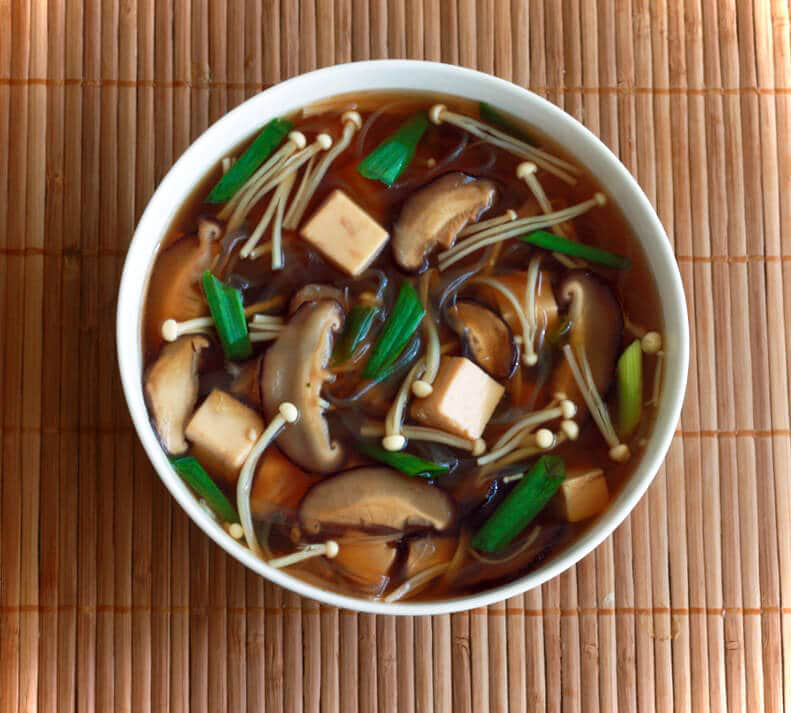

Mushroom Tofu And Vermicelli Soup

Ingredients
4 cups
Chicken Stock
2 tbsp
Soy Sauce
1 tbsp
Miso Paste
1 tbsp
Mirin
1 tbsp
Sake
120g
Tofu
cut into 1/2 inch cubes
90g
Shiitake Mushrooms
thinly sliced, stems discarded
60g
Enoki Mushrooms
60g
Vermicelli Noodles
3
Shallots
sliced diagonally
Utensils
Steps
1. Prep
5 min
Slice mushrooms and green onions.
2. Cook Soup
10 min
Add the chicken stock, soy sauce, miso paste, mirin and sake to a medium saucepan and bring to a boil.
Reduce heat and simmer for
2 minutes
.
Add the tofu, mushrooms, and vermicelli, return to a boil, reduce heat, and simmer for
6 minutes
.
Add the green onions and simmer for another
2 minutes
.